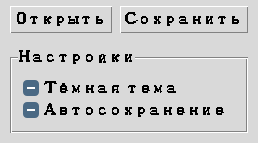

Глава 16 · Создаём классные приложения с Tkinter
Frame и LabelFrame: организуем интерфейс
Прежде чем размещать десятки виджетов, разбейте окно на понятные регионы.
Frame — структура прежде компоновки
ttk.Frame — контейнер без собственного видимого содержимого,
который группирует связанные виджеты в осмысленные регионы:
root
toolbar_frame
content_frame
status_frame
frame.py
import tkinter as tk
from tkinter import ttk
root = tk.Tk()
toolbar_frame = ttk.Frame(root)
content_frame = ttk.Frame(root)
status_frame = ttk.Frame(root)
toolbar_frame.pack(side="top", fill="x")
content_frame.pack(side="top", fill="both", expand=True)
status_frame.pack(side="bottom", fill="x")Внутри каждого фрейма можно независимо использовать pack()
или grid() — правило «не смешивать» действует в пределах одного
родителя, а не всего окна (подробная схема — в разделе 16.15).
LabelFrame — визуально подписанная группа

labelframe.py
nastrojki = ttk.LabelFrame(root, text="Настройки")
nastrojki.pack(padx=10, pady=10, fill="x")
ttk.Checkbutton(nastrojki, text="Тёмная тема").pack(anchor="w")LabelFrame — не для каждой мелочи
Используйте
LabelFrame для действительно связанной группы настроек, а не для каждого отдельного виджета — иначе интерфейс превращается в лестницу рамочек.Практика: организуем интерфейс через Frame
Модуль tkinter открывает нативное окно Python — выполните локально в VS Code, PyCharm или Jupyter
Практика выполняется локально